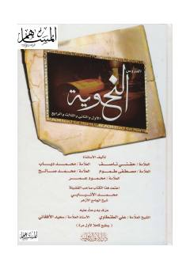

DAArab tili grammatikasi va nahv ilmi bo'yicha to'rt qismdan iborat saboqlar.
Ushbu kitob arab tili grammatikasi, xususan nahv ilmi bo'yicha saboqlarni o'z ichiga olgan to'rt qismdan iborat qo'llanmadir. Asar arab tilini o'rganuvchilar uchun grammatik qoidalarni tushuntirishga qaratilgan. Matn arab tilida tuzilgan bo'lib, til o'rganish va diniy matnlarni tushunishda muhim manba hisoblanadi.